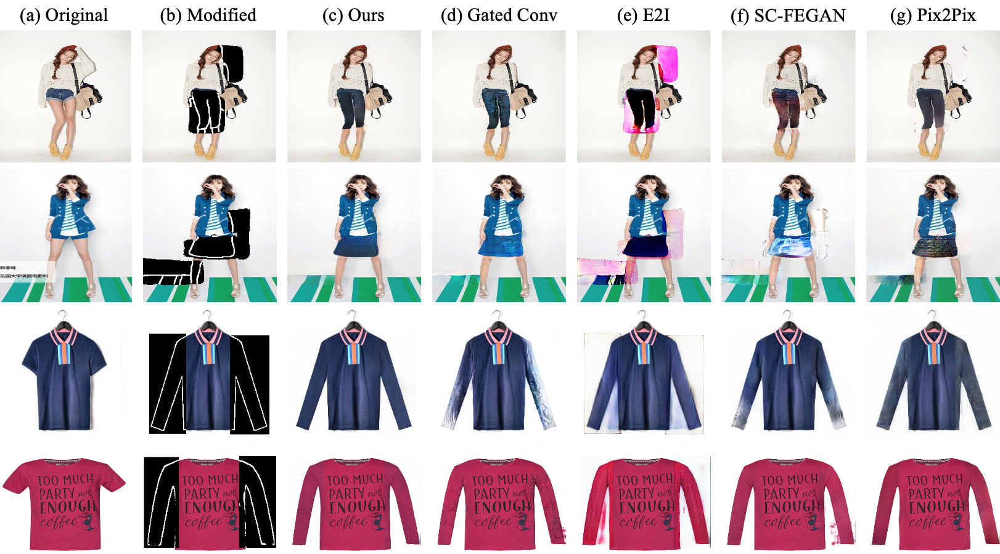

The Hong Kong Polytechnic University
Hong Kong SAR, China
zhengwt.sun@connect.polyu.hk
The Hong Kong Polytechnic University
Hong Kong SAR, China
yanghong.zhou@connect.polyu.hk
The Hong Kong Polytechnic University
Hong Kong SAR, China
honghongvicky.he@connect.polyu.hk
The Hong Kong Polytechnic University
Hong Kong SAR, China
tracy.mok@polyu.edu.hk
Demo
Please visit our online demo at here.

Abstract
Advancements in image editing technologies, such as generative adversarial networks (GANs), have introduced efficient editing techniques using text descriptions, semantic segmentation, and reference style images. However, the flexibility and iterative modifications needed for complex tasks like fashion image editing remain a challenge for existing methodologies. To address this, we propose CoDE-GAN, a novel approach for flexible image content editing using sketches. This method generates images with consistent colors and textures by uniquely decoupling the image content into separate structure and texture representations. This decoupling effectively addresses the difficulty in reconstructing content regions outlined by sketches due to its sparsity. In our approach, a content decoupling block preprocesses inputs under structure-guidance and texture-guidance, transforming these inputs into their respective structure and texture representations. To minimize artifacts and improve texture consistency with the original image, a content enhancement module is applied in the decoder stage. This module computes a content response map and aligns it to a grey image using cosine similarity, enabling CoDE-GAN to achieve coarse-to-fine results in a single stage. Through extensive evaluations on four datasets – a fashion-centric human ATR dataset, two garment-based dataset, and a scene dataset (LSUN outdoor church), CoDE-GAN demonstrates its superiority over state-of-the-art methods in terms of image quality and editing flexibility. Our findings show that CoDE-GAN offers a promising solution for advanced image editing tasks, specifically in the fashion industry where flexible and iterative modifications are crucial.